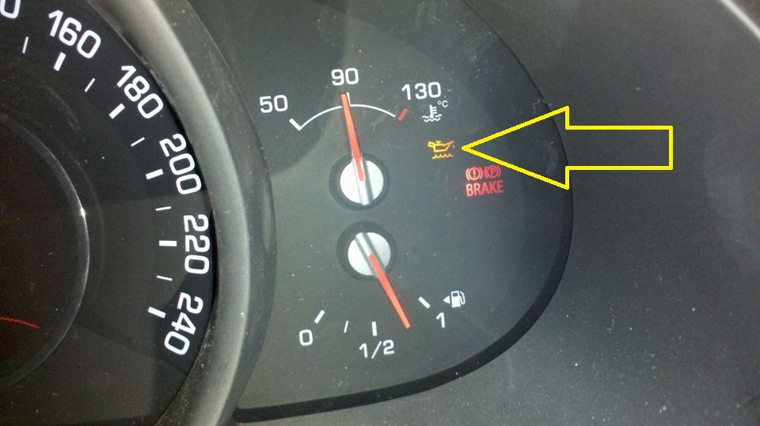
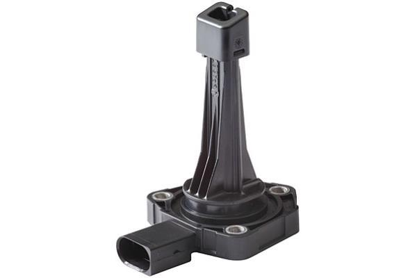
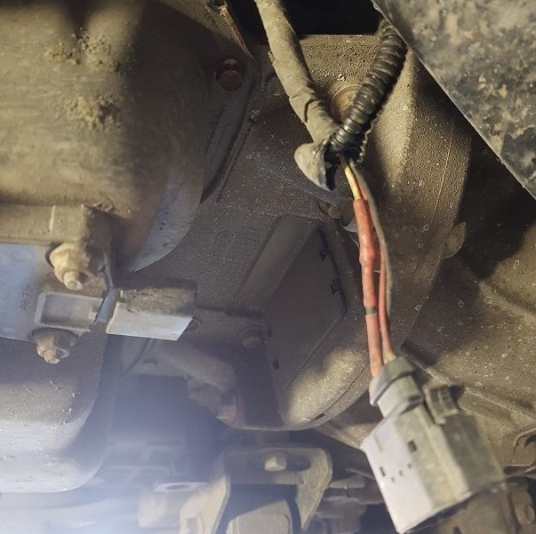
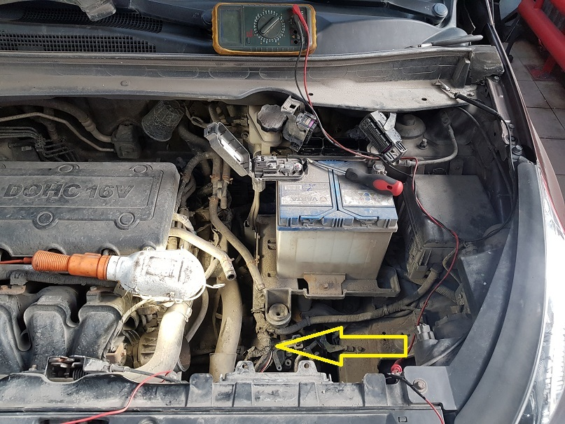
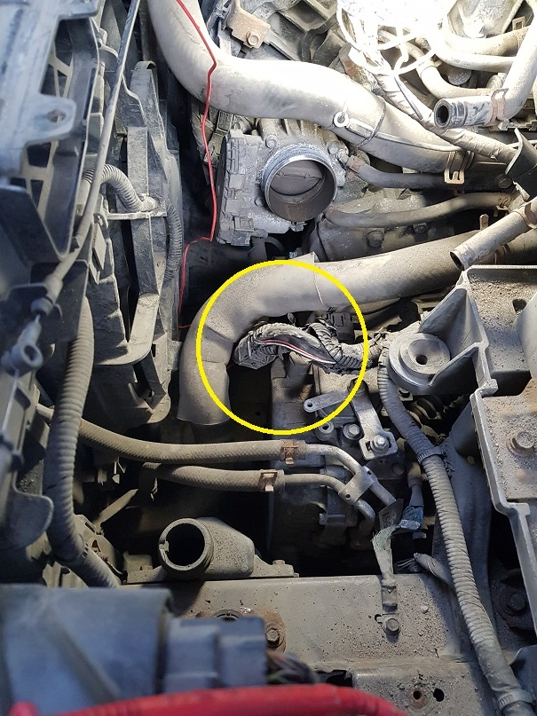
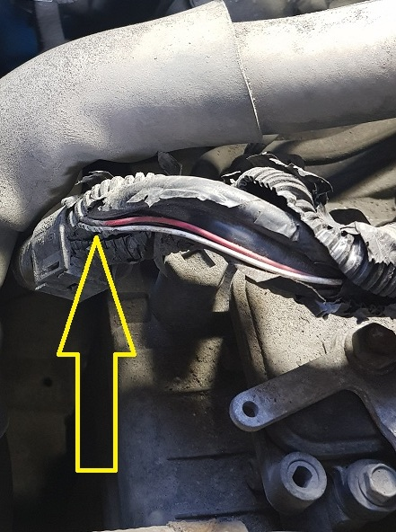
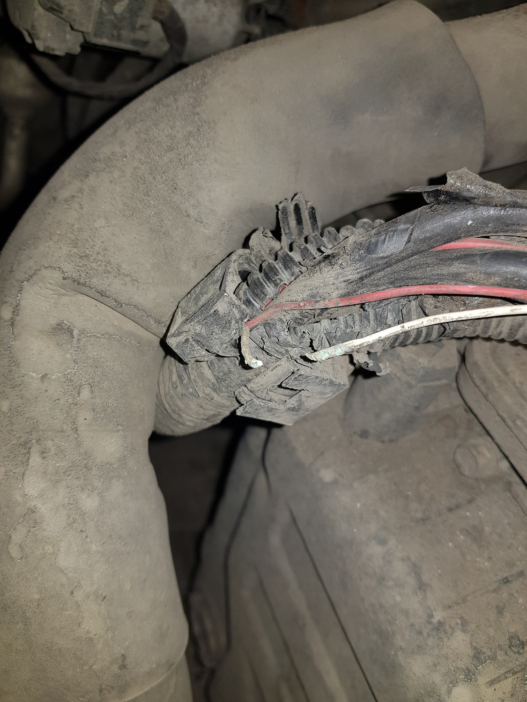

06.04.2019
К нам обратился клиент , владелец KIA SPORTAGE 3 2011г. 2.0л. , с проблемой : постоянно горит жёлтая контрольная лампа " уровень масла двигателя " . При этом уровень масла фактически ( по щупу ) в норме.


Перед ремонтом было принято решение приобрести новый датчик уровня масла ( аналог оригинала приличного качества HELLA 6PR 009 622-121 ) , так как , возможно неисправность в нём.

Сняв защиту двигателя и добравшись до маслянного поддона ( в котором и установлен датчик уровня масла ) мы обнаружили , что датчик уже менялся , и был произведён ремонт разъёма на него.

Проверив питание датчика ( 12 V красный провод "+" и чёрный провод "-" ) и наличие опорного напряжения на сигнальном проводе белого цвета было принято решение поменять датчик. После замены необходимо сбросить ошибку включив и выключив зажигание 3-4 раза , что и было сделано.
Однако , на этом ремонт не закончился !
Запустив двигатель лампа уровня масла предательски зажглась !
В процессе поиска причины неисправности выявилось , что сигнальный провод от датчика на ЭБУ двигателя меняет сопротивление в моменте прощупывания косы проводов. В итоге ( тернист и труден путь диагноста ) был найден " сгнивший " участок провода .

И хитрость неисправности заключалась в том , что через сгнивший участок тестором провод прозванивался , но для полноценной работы уже был не годен !...
В этом месте штатная коса проводов соприкасается с патрубком системы охлаждения , который вибрируя и надавливая на косу буквально расплющил , гофрой , провод сигнала датчика уровня масла.


На этом поиск неисправности был закончен ... , а провод - восстановлен . Новый датчик решили оставить на двигателе..
Хотелось бы добавить , что это явно "косяк" завода изготовителя и возможно одно из больных мест данного авто. Лампа уровня масла двигателя могла загораться или наоборот тухнуть после мойки мотора или в дождь....